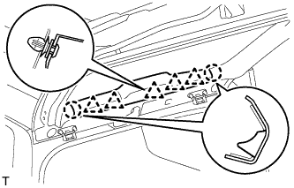
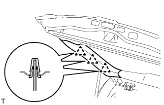
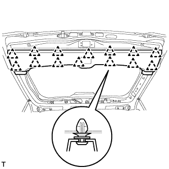
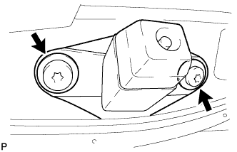
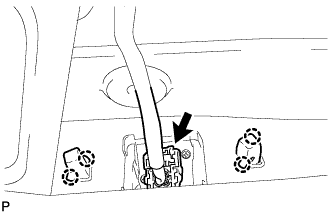

TELEVISION CAMERA > REMOVAL |
| 1. REMOVE CENTER BACK DOOR GARNISH |
 |
Detach the 5 clips and 2 claws, and remove the back door garnish.
| 2. REMOVE BACK DOOR SIDE GARNISH LH |
 |
Detach the 3 clips and remove the back door side garnish.
| 3. REMOVE BACK DOOR SIDE GARNISH RH |
| 4. REMOVE BACK DOOR GARNISH |
 |
Using a screwdriver, detach the 14 clips and remove the back door garnish.
| 5. REMOVE REAR TELEVISION CAMERA ASSEMBLY |
 |
Using a T30 "TORX" socket wrench, remove the 2 screws.
 |
Detach the 4 claws and remove the rear television camera assembly.
Disconnect the connector.